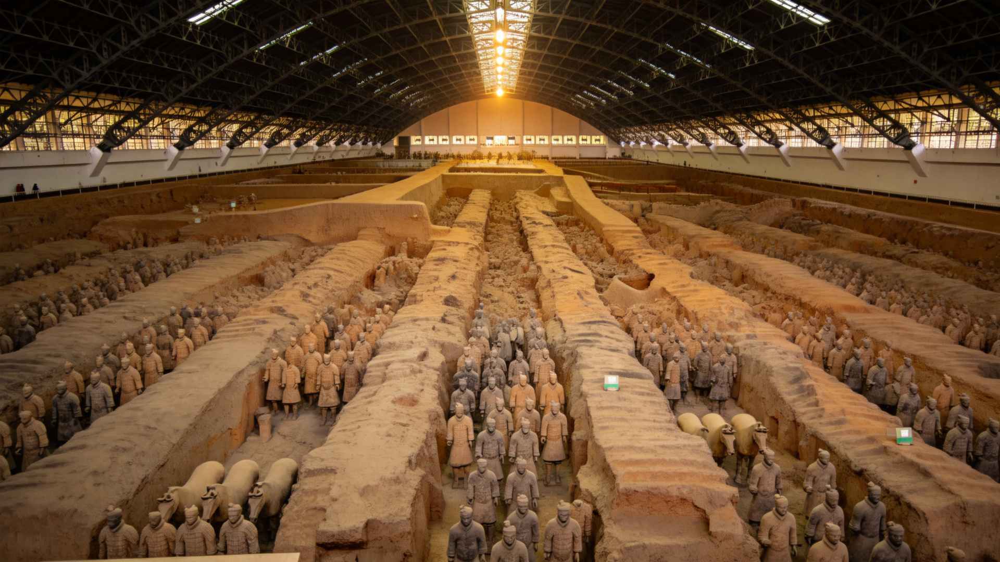
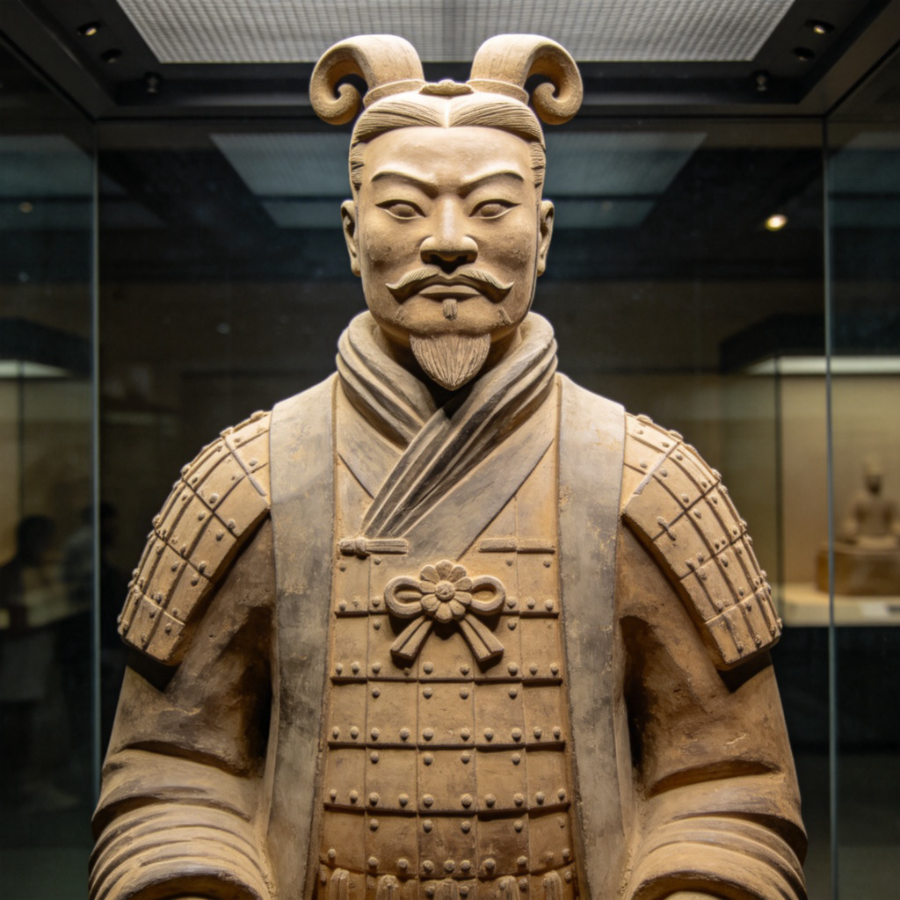
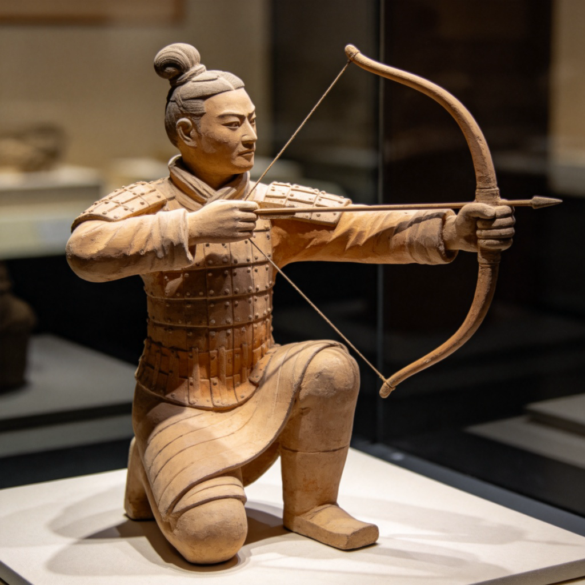
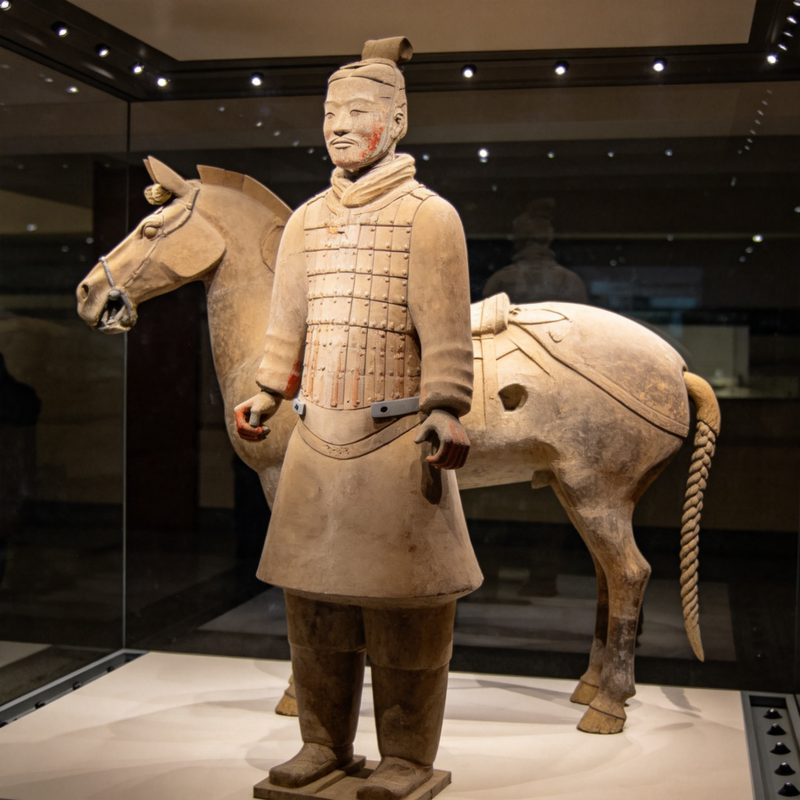
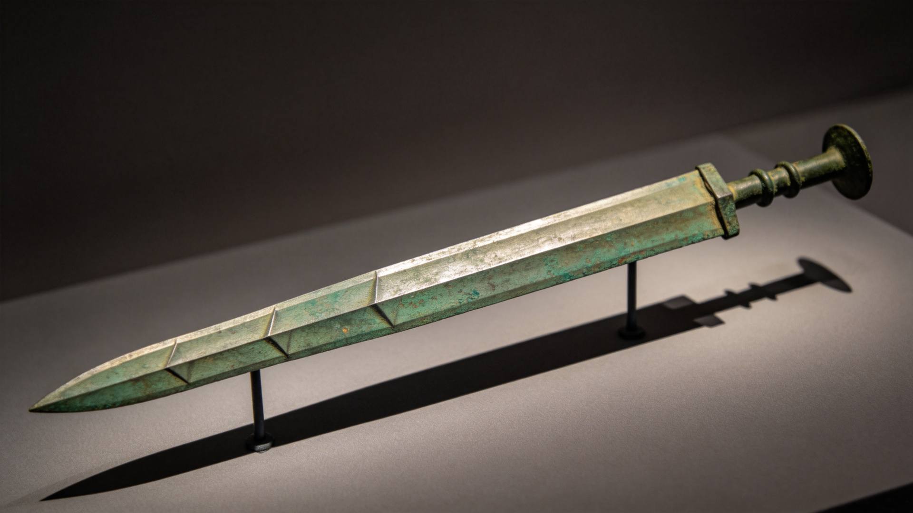
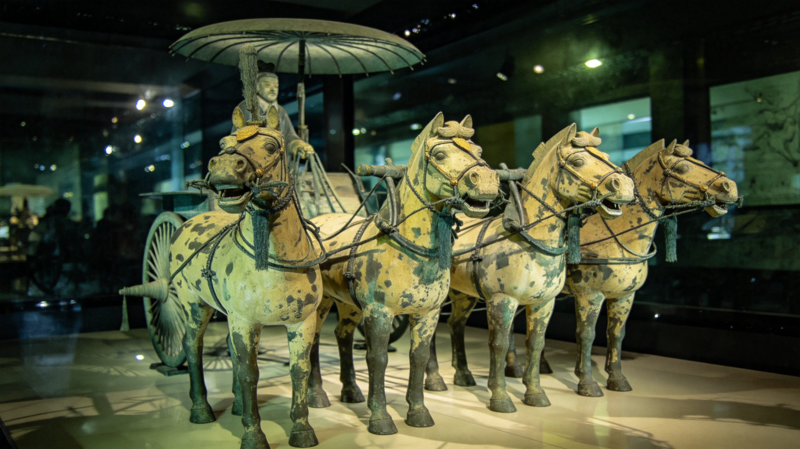
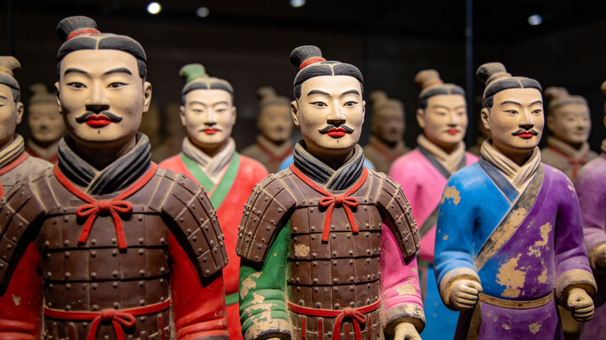

秦始皇兵马俑，简称秦兵马俑或秦俑， 位于陕西省西安市临潼区，距秦始皇陵以东1.5千米， 是秦始皇帝陵博物院的核心组成部分。
这是一支深埋地下2200多年的陶制军队—— 超过8000个真人大小的武士俑、数百匹陶马和上百辆战车， 以严整军阵再现了秦统一六国的磅礴气势。被誉为 "世界第八大奇迹"和"世界十大古墓稀世珍宝之一"。
先后有200多位外国元首和政府首脑专程前来参观， 兵马俑已成为中国古代辉煌文明的一张金字名片。
要理解兵马俑，得先认识它们的"主人"—— 秦始皇嬴政（公元前259年—前210年）。 他是中国历史上第一位皇帝，也是统一六国、建立中央集权制度的关键人物。
嬴政出生于赵国都城邯郸（今河北邯郸），父亲秦庄襄王当时在赵国做人质。
13岁继承秦王之位，由相邦吕不韦和太后赵姬辅政。
平定嫪毐叛乱，铲除吕不韦，22岁开始亲政。
先后灭韩、赵、魏、楚、燕、齐六国，完成统一大业。
自称"始皇帝"，建立中央集权：设三公九卿，废分封，行郡县；统一文字、货币、度量衡、车轨。
秦始皇陵开始修建，动用70余万人，历时39年。兵马俑是陵墓的陪葬坑。
嬴政在巡游途中驾崩于沙丘（今河北邢台），终年50岁，葬于骊山秦始皇陵。
秦始皇为何要建造如此庞大的陶俑军团？按古人的观念，死后世界与生前世界一样， 皇帝在阴间同样需要军队保护。兵马俑就是秦始皇"死后帝国"的禁卫军—— 就像他用武力统一天下一样，这支地下军队将继续护卫他在另一个世界的统治。

兵马俑坑位于秦始皇陵东侧1.5千米处，三坑呈"品"字形排列， 均为地下坑道式土木结构建筑：先挖深约5米的大坑，中间筑土隔墙， 墙上架棚木、铺苇席、覆黄土，底部用青砖墁铺，陶俑放入后封堵门道——形成一座封闭的"地下宫殿"， 坑内空间高度约3.2米。
最早发现、规模最大：东西长230米，宽62米，面积14,260平方米。 坑内约有8000余个兵马俑，以步兵和战车组成庞大的长方形军阵， 前锋、侧翼、后卫层次分明，再现了秦军"强弓劲弩在前，长矛大戟居中，战车铁骑殿后"的经典战术布局。
1974年3月，临潼县农民打井时偶然发现——这个"意外"震惊了全世界。
位于一号坑东北侧，东西长124米，宽98米，面积约6,000平方米。 布阵更为复杂，包含骑兵、弩兵、战车、步兵四个相对独立的作战单元， 是研究秦代多兵种联合作战的珍贵实例。著名的跪射俑和立射俑就出土于此。
2025年，二号坑第9过洞东段新发掘出土战车两乘、车马器15件、兵器9件，考古工作仍在进行。


三号坑面积最小，仅520平方米。 出土武士俑68件，呈警卫队列排列，考古学家推测这里是整个军阵的指挥部（军幕）。
四号坑是一个未建成的空坑，说明秦始皇陵工程可能因秦末农民起义而被迫中止——就像一座永远停留在蓝图上的建筑。
兵马俑坑出土文物数量惊人：武士俑约7000件、木质战车100余辆、陶马100多匹， 以及大量青铜兵器。陶俑身高一般在1.8米左右，最高的将军俑可达1.96米。

最令人惊叹的出土文物之一是秦铜车马。1978年出土于秦陵封土西侧， 共两乘，一为"立车"（开道车），一为"安车"（坐乘车），按真人车马1/2比例用青铜铸造。 出土时破碎成3000多片，经过近8年精心修复，1989年正式展出。
铜车马由3500余个零部件组成，使用金银饰件超14千克， 采用了铸造、镶嵌、焊接、子母扣连接、活铰连接等多种工艺。它被誉为 "青铜之冠"——是中国考古史上出土的体型最大、结构最复杂、系驾关系最完整的古代车马。

兵马俑坑中出土的青铜剑，剑身有8个棱面，误差不超过 0.2毫米。更神奇的是，剑表面有一层10微米厚的铬盐氧化层—— 这种防锈技术直到20世纪才被德国和美国"重新发明"并申请专利。 也就是说，秦朝工匠掌握的冶金技术，领先了西方约2000年。
兵马俑的制造堪称古代工业化的奇迹。陶俑采用分段模制、拼接组装的工艺： 身体各部分（头、躯干、四肢、手）分别用模具制作，然后拼接成整体， 再用雕刻手法刻画面部细节——这就解释了为什么8000多个兵马俑没有两个完全相同的面容， 真正做到"千人千面"。

很多人以为兵马俑本来就是土黄色的，其实它们刚制成时色彩极其鲜艳： 面部肉色、黑眉红唇，铠甲深褐，战袍朱红、粉绿、天蓝、紫色交织。 可惜在潮湿的地下埋藏2200年后，出土时颜料接触空气迅速氧化剥落， 短短几分钟内就从五彩斑斓变成我们今天看到的土黄色——就像一张彩色照片在阳光下瞬间褪色。
陶俑的制作者身份也很有趣。考古人员在陶俑身上发现了100多枚指纹印痕， 经分析发现，这些工匠中既有官署作坊的成年工匠，也有民间作坊的匠人， 甚至还有未成年人参与其中。每一枚指纹都像跨越2000年的"签名"，连接着我们与这些无名工匠。
去看兵马俑时注意找"绿脸俑"——1999年在二号坑出土的一尊跪射俑，面部涂有石绿颜料， 不同于其他陶俑的肉色面庞。这是目前发现的唯一一尊绿脸俑，至今原因成谜，学者推测可能与祭祀仪式或军中巫术有关。
兵马俑并非秦始皇首创。商周时期就有"人殉"制度——活人陪葬。 春秋战国时逐渐用陶俑、木俑代替活人，这叫"以俑代人"。 秦始皇只是把规模做到了极致。某种程度上，兵马俑的出现反而推动了文明的进步—— 至少不用真人士兵去陪葬了。
兵马俑的发现纯属"打井意外"。1974年陕西大旱，临潼县西杨村几个农民 在村南打井抗旱，井口不偏不倚正好开在了一号坑的东南角。下挖时先是挖出陶俑碎片， 后来干脆挖出了完整的陶俑头部——这个"巧合"改写了世界考古史。
兵马俑手里原本都握有真实的青铜兵器——剑、矛、戟、弩机等。 但秦末项羽攻入关中后，据说劫走了俑坑中的兵器并烧毁了部分坑道。 今天我们看到坑内许多陶俑空空如也的双手，就是这样来的。一号坑甬道中也发现了人为挖开的痕迹。
秦始皇陵的封土堆至今尚未正式发掘。据《史记》记载， 地宫中"以水银为百川江河大海"，现代汞含量检测确实发现陵区土壤汞异常偏高， 证实了文献的可信度。出于文物保护技术限制，国家目前的政策是"暂不发掘"—— 也许你一生都看不到秦始皇陵打开的场面，但这反而增加了它的神秘感。
地铁：西安地铁9号线直达"秦陵西"站，出站后换乘免费摆渡车。
公交：从西安火车站东广场乘坐游5（306路）直达兵马俑，票价约7元。
自驾：连霍高速"临潼"出口下，沿秦唐大道行驶约15分钟。